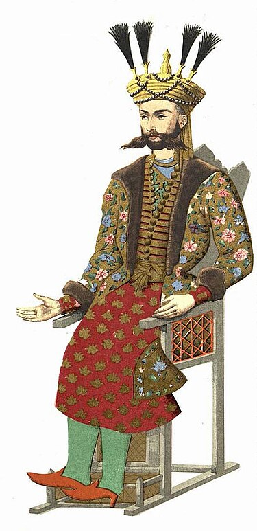

მმართ. დასაწყისი: 1722
მმართ. დასასრული: 1732
წინამორბედი: დავით II
მემკვიდრე: თეიმურაზ II
პირადი ცხოვრება

დაბ. თარიღი: ?
გარდ. თარიღი: 1732
დინასტია: ბაგრატიონები
მამა: ერეკლე I
რელიგია: ისლამი
ბიოგრაფია
კონსტანტინე II დაიბადა და აღიზარდა ისპაჰანში. მეფობა მიიღო ძმის, დავით II-ის (იმამყული-ხანის), გარდაცვალების
შემდეგ ირანის შაჰისაგან, რომელმაც კახეთის გარდა საგანგებოდ მისცა ერევანი, შამშადილი და ყაზახი (შემდეგში
ერევნის ნაცვლად ებოძა განჯისა და ყარაბაღის გამგებლობა).თუ ამ ამბავში ინტერესი გაგიჩნდათ ამ ღილაკს დააჭირეთ და გადაგიყვანთ ვიკიპედიაზე!